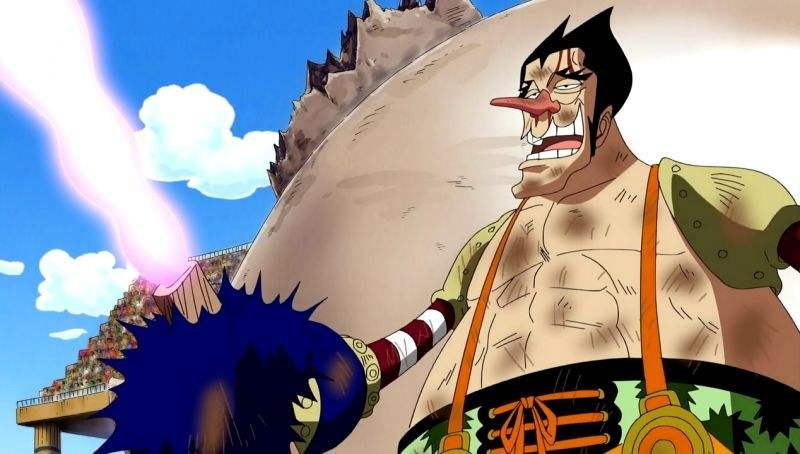

《海贼王》剧集中，结束空岛的冒险后，草帽一伙在海上遇到一艘既没有帆也没有旗帜的海贼船，还因为少了指挥一切的船长和航海士让船员变的没有组织性。整艘船在他们面前遭到海猴子引起的巨浪吞噬。一行人后来来到了长环长岛，遇到狡猾的海贼团船长弗克西，拥有迟缓果实能力的弗克西向鲁夫挑战Davy
Back Fight比赛。 胜利者可以从败方选择得到一名成员或选择标志。
被夺走标志后不得再挂上该标志，以及被夺走的同伴、标志等，都必须在由Davy Back Fight夺回。

长环长岛篇
草帽海贼团与弗克西海贼团比了三场（动画是六场），分别为“环形赛艇”、“火爆斗球”、“滚轴溜冰追逐战(动画追加)”、“Hit &
Deadball(动画追加)”、“D.T.D(动画追加)”，第三场（动画第六场）是“双方船长一对一决斗”，弗克西的迟缓能力一度让鲁夫居于劣势，最后因为想要守护所有伙伴的心意以及爆炸头的野性力量爆发，让他战胜了弗克西。事情结束后，他们又遇上了海军本部最高战力上将库山，而他的目的，就是要歼灭曾经从他手中逃走的妮可·罗宾。为了保护罗宾，路飞一行人和这个可怕的强敌战斗，败得一塌糊涂，最后却被放过一马。遭到青雉冷冷果实能力攻击导致全身被冰冻的罗宾和鲁夫，则在团员们的合力抢救下捡回一命。